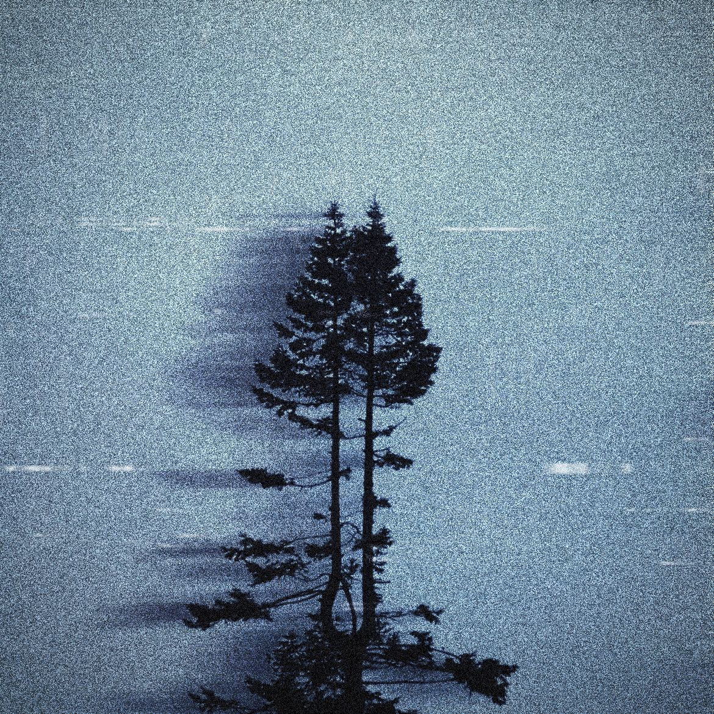

Empire Weeps
Post-Rock · Album · 2026

About This Release
Empire Weeps was my first proper Post-Rock album and also the first to be led by a narrative concept.- Released
- 2026
- Format
- Album
- Tracks
- 5
- Length
- 42:54
Overview: An album telling the story of corruption bringing about the downfall of a future, singular earth-wide government. Using Post-Rock, a genre defined by the frequent presence of anti-authoritarian messages and artists, was effective for telling this story.
Tracklist
- A Dead Radio Broadcast
- Last Words from Mile Zero
- Empire Falls Silent
- The Earth Is Load
- Empire Weeps/Horrors Cease